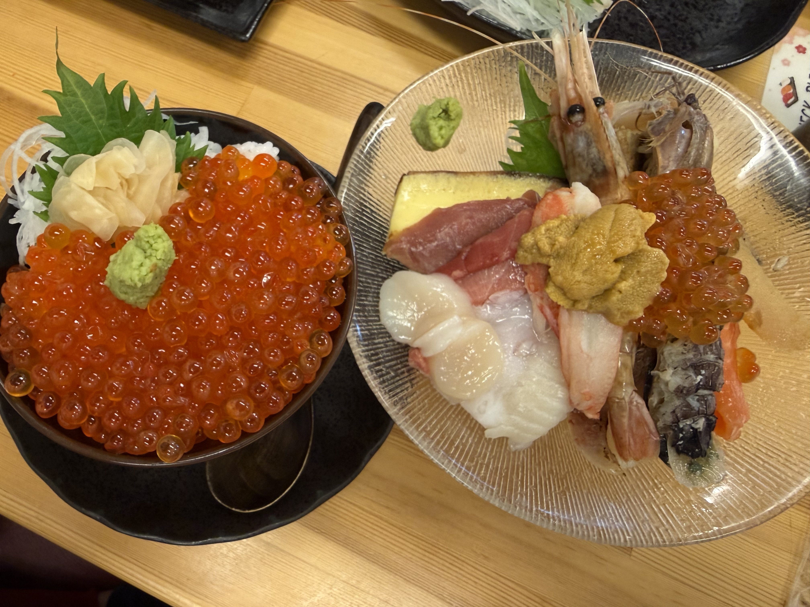
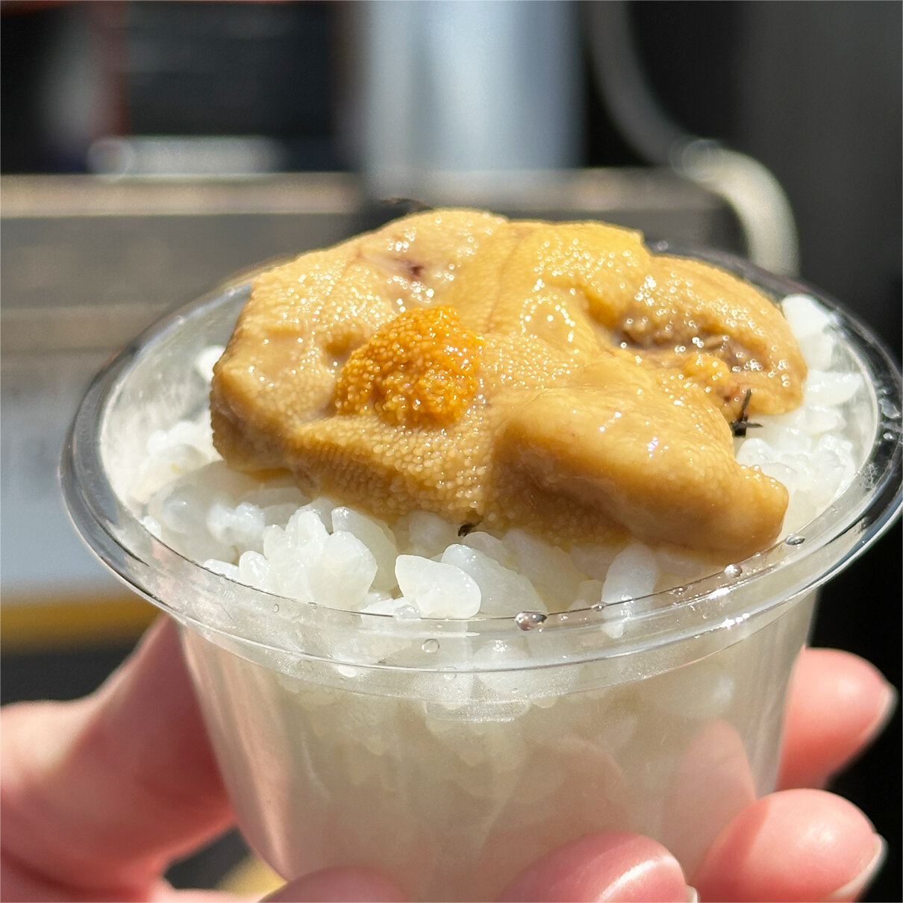
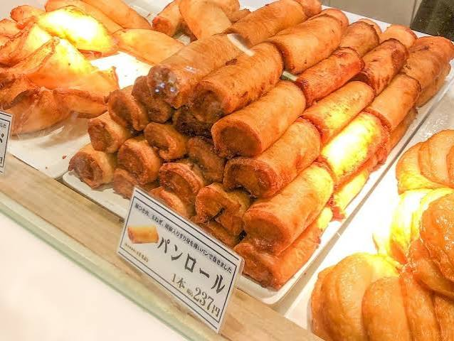

ここに紹介する所以外にもいい所はきっとあるので自分で調べると良い。
（※ 値段や店舗情報はもしかしたら間違ってるかもだから自分でちゃんと調べてね）
小樽で海鮮を食べるなら三角市場か、堺町通り商店街になると思う。
ただ、観光地なのでやっぱり価格は観光地価格。正直結構お高い。「愛知でも柳橋市場とか、知多とか行きゃ食えるくね？」と思っちゃう人にはお勧めできない。
でも、“北海道で海鮮を食べた”という経験になら僕は少し高めでも払う価値はあるんじゃないかなと思うのです。
食べたいけど、そんなにたくさん食べられないよ！ってひとは堺町通り商店街に行くと、ひとくち海鮮みたいなのもあるのでそこでひとくちだけ楽しむっていう楽しみ方もいいかと思う。

イクラ丼と、特選海鮮丼。いいか、マジな話をしてやろう。特選じゃない方の海鮮丼の方が絶対にイイ。行けばわかる。絶対に普通の海鮮丼にするんだ。

ひとくち丼で手軽に海鮮を楽しむならアリ
北海道のスイーツはもう多すぎて手に負えない。だって、牛乳のソフトクリーム、チョコレート、小豆、メロンとか、洋菓子もいい。「お土産」という視点なら別。洋菓子なら LeTAO（ルタオ）かな。和菓子なら柳月も食べたいな。とかはあるけどもういっそ食べ歩きで楽しむならもう手あたり次第食べた方がイイ。だから省略。
新千歳空港でも食べられるのだけど、割と徒歩圏内に工場直売店があるのでせっかくなら立ち寄ってもイイかも。

小樽にはかま栄の工場直売店があるので、そこでこのパンロールは食べてみてもいいかもしれない。今まで食べた事ない初めての体験がそこにあるよ。